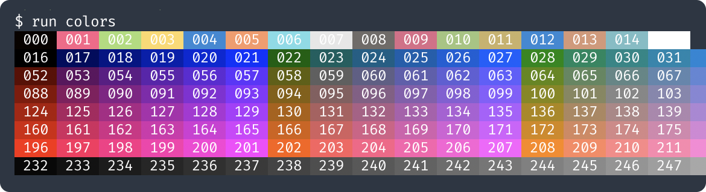

Upgrade your scripts using 'direnv' and 'run' script
In JavaScript/Node world, we usually store scripts in package.json and run them using npm. In other worlds, we use Makefile or create a directory and put all our scripts there. But there is a better way to manage and run scripts for your team. No, I’m not talking about Warp or other pricey fancy tools.
I will share about direnv and our old friend bash: How we are using them to effectively write and manage scripts as a team.
direnv: Automatically set environment variables base on the current directory
For a boring quick introduction, direnv is an environment switcher for the shell. You can define environment variables in a .envrc file within a directory, and these variables are automatically applied when you cd into that directory. When you leave the directory, the environment variables are unloaded, ensuring that your environment stays clean and consistent.
You can quickly install it from your favorite package manager and add a line to your shell profile. Then you can create a .envrc and put any export or commands into it. Yes, any commands. They will be automatically executed when you enter the directory. No, don’t worry, it won’t run arbitrary code from theh internet. You must explicitly allow it by entering direnv allow — every time the content changes.
That’s enough for an introduction. Now, let’s come to the fun part: How do we use it in practice?
Setup common environment variables for the project
At the root of our project, we have a .envrc file that sets up the environment for our project. The first use case is to declare common variables for use in scripts:
# .envrc
export PROJECT_ROOT=$(git rev-parse --show-toplevel 2>/dev/null)
export RELATIVE_PATH=$(git rev-parse --show-prefix 2>/dev/null)
While the code looks simple, it serves a very important purpose: When writing scripts, we know that these variables are always available. The project root, and the relative path to the current directory. Now we can use them wherever we want:
# run script (more on it later)
run-clean() {
rm -r "$PROJECT_ROOT/js/node_modules"
rm -r "$PROJECT_ROOT/.logs"
}
run-test() {
bash -c "cd $PROJECT_ROOT/go && go test ./..."
bash -c "cd $PROJECT_ROOT/idl && go test ./..."
}
run-in-docker() {
docker run -v "$PROJECT_ROOT:/root/src" \
-w "/root/src/$RELATIVE_PATH" \
"$DOCKER_IMAGE" "$@"
}
Automatically make all scripts in a directory available
Let’s assume that our project has this structure:
backend/
├── .bin/
├── idl/
├── js/
├── go/
├── scripts/
│ ├── _cli.sh
│ └── build-all.sh
├── .envrc
└── run
When we are working at a subdirectory, we may want to run build-all.sh from the scripts directory. Without direnv, we can run it by specifying the full path to the script ~/Users/i/ws/backend/scripts/build-all.sh or by ../../../scripts/build-all.sh. Thank to direnv, we can make all scripts in the scripts directory always available by using PATH_add:
# 'PATH_add' and 'path_add' are different commands
PATH_add "$PROJECT_ROOT/scripts"
Now we can run build-all.sh from any directory in the project! So convenient! Even better, we can put all your scripts into run script at the root of the project, and add this line to the .envrc file:
PATH_add "$PWD"
Next time, simply run build-all from anywhere. More on that later.
Different configurations for different directories
When inside a directory, direnv will look for .envrc file in that directory and execute it. If the directory does not have .envrc file, direnv will travel up the tree until it finds one. This allows us to have different configurations for different subprojects. Like these:
# go/.envrc
export DOCKER_IMAGE=golang:1.22
export CONTAINER_NAME=my-go-dev
And in the js directory:
# js/.envrc
export DOCKER_IMAGE=node:22-alpine
export CONTAINER_NAME=my-js-dev
So when we run docker from any directory, it will use the correct Docker image and configs.
Verify that all developers use the same tools and versions
Remember that we can put any commands into the .envrc file? We can use this to ensure that all developers use the same tools and versions. For example, we can check that the correct version of Go is installed:
# .envrc
if ! command -v go &> /dev/null; then
echo "Go is not installed. Please install Go 1.22 👉 https://golang.org/dl"
exit 1
fi
if ! go version | grep -q "go1.22"; then
echo "Go 1.22 is required. Please install Go 1.22 👉 https://golang.org/dl"
exit 1
fi
We can put similar checks for other tools like Node, Docker, or any other tools that your project uses. This ensures that all developers use the same tools and versions, which can prevent many issues.
Tip: Put the above checks in go/.envrc so only developers working on the Go part of the project need to have Go. We don’t want to force front-end developers to install Go, do we?
Include parent .envrc file
When we have a large project with multiple directories, and we have to copy (& maintain) those .envrc files to each directory, it’s time to refactor! Instead of copying, we can include the parent .envrc file. This is very useful since we can organize our configs with inheritance and overrides: A single source of truth for shared configurations while allowing specific directories to override or extend these settings as needed.
Let’s use the source command to include the parent .envrc file:
find-parent() {
local dir=..
while [[ -d "$dir" ]] && [[ ! -d "$dir/.git" ]]; do
dir="${dir}/.." ;
done
echo "$dir"
}
parent-envrc=$(find-parent)/.envrc
if [[ ! -f "$parent-envrc" ]]; then
echo "no parent .envrc found"
exit 1
fi
# shellcheck source=/dev/null
source "$parent-envrc"
# we can override variables if needed
export DOCKER_IMAGE=golang:1.22
There are many other use cases for direnv if you want to explore more. Now, let’s move on to the run script.
run: A simple bash script to manage all scripts in a project
It’s not an actual tool for you to install, but a pattern for managing and executing scripts. We create a file with name run at the same directory with .envrc and put our scripts there. This file is a collection of functions that we can run from the command line. It’s like a Makefile, but written in bash.
An example
A picture code is worth a thousand words. Here is an example of run script that we use in our project:
#!/bin/bash
set -eo pipefail
run-calc() {
result=$(echo "$@" | bc -l)
if [[ "$JSON" == "1" ]] ; then
echo '{"result": "'$result'"}'
else
echo "$result"
fi
}
run-colors() {
color(){
for c; do
printf '\e[48;5;%dm %03d ' $c $c
done
printf '\e[0m \n'
}
IFS=$' \t\n'
color {0..15}
for ((i=0;i<6;i++)); do
color $(seq $((i*36+16)) $((i*36+51)))
done
color {232..255}
}
run-update-submodules() {
git submodule update --init --recursive --remote
}
run-direnv-allow-all() {
find . -name .envrc -exec bash -lc \
'cd "$(dirname "{}")" && pwd && direnv allow' \;
}
run-generate-all() {
bash -c "cd $PROJECT_ROOT/go && go generate ./..."
direnv exec "$PROJECT_ROOT/idl" run generate
RELATIVE_PATH="$PROJECT_ROOT/idl" run-in-docker buf generate
}
run-in-docker() {
docker run -v "$PROJECT_ROOT:/root/src" \
-w "/root/src/$RELATIVE_PATH" \
"$DOCKER_IMAGE" "$@"
}
# -------- this is the magic ------- #
source "$PROJECT_ROOT/scripts/_cli.sh"
Save that script as run in the same directory with .envrc. On its own, the run script does not do anything. It’s just a collection of functions. The magic happens at the last line when it source the _cli.sh script.
_cli.sh: make all functions from the run script available
So what does _cli.sh do? Its job is to detect all available functions in the run script and allow you to run them from the terminal. Here is the content of _cli.sh:
#!/bin/bash
set -eo pipefail
show-help(){
items=()
while IFS='' read -r line; do items+=("$line"); done < \
<(compgen -A "function" | grep "run-" | sed "s/run-//")
printf -v items "\t%s\n" "${items[@]}"
usage="USAGE: $(basename "$0") CMD [ARGUMENTS]
CMD:\n$items"
printf "$usage"
}
name=$1
case "$name" in
"" | "-h" | "--help" | "help")
show-help
;;
*)
shift
if compgen -A "function" | grep "run-$name" >/dev/null ; then
run-"${name}" "$@"
else
echo "ERROR: run-$name not found."
exit 123
fi
;;
esac
Let’s try it:
$ run
USAGE: run CMD [ARGUMENTS]
CMD:
calc
colors
direnv-allow-all
generate-all
in-docker
update-submodules
Nice! It shows all available commands, sorted by name.
Let’s run a command:
$ run colors

Beautiful! It outputs all colors in 256-color mode together with their codes.
And what happens if a command does not exist?
$ run x
ERROR: run-x not found.
$ echo $?
123
Oh! It shows an error with exit code.
Can we pass arguments and variables too?
$ run calc 2 ^ 16
65536
$ JSON=1 run calc '6 * 7'
{"result": "42"}
Perfect! Now we are ready to add more scripts to run! 🚀🚀
Explanation: How does it work?
- The
runscript declares functions that we want to run. These functions start withrun-prefix. - The
_cli.shscript detects all available functions in therunscript by callingcompgen -A "function". - compgen is a bash built-in command that generates possible completions for a command.
- We pipe
compgenoutput throughgrepandsedto get all functions that start withrun-prefix, then save them intoitems. This is the list of available commands. We can then list them inrun help. - To run a command, we check if the function exists by calling
compgenagain. If it exists, we call it with the provided arguments. If not, we show an error message and exit with code 123.
Direnv and run are a powerful combination:
- Without
direnv, we need to use./run colorsto call thecolorscommand. If we are in a subdirectory, it becomes../../../run colors. - Thanks to
direnv, we can usePATH_add "$PWD"in.envrcand enjoy callingrun colorsfrom any subdirectory. - The
run-in-dockerfunction is a good example of how we can usedirenvandruntogether. It uses theRELATIVE_PATHandDOCKER_IMAGEvariables from the.envrcfile to run a command in a Docker container.- Remember that we can declare those variables in different
.envrcfiles for different directories?
- Remember that we can declare those variables in different
- The
run-generate-allfunction demonstrates usingdirenv execand manually setRELATIVE_PATHto run the command in other directories.
Using direnv and run in practice
Predefine utilities and make them always available for scripts
For example, let’s define a few functions for coloring text in the _cli.sh script:
# _cli.sh
# t is text
t-color() { printf "\e[38;5;%dm" "$1" ; }
t-yellow() { t-color 3 ; }
t-reset() { printf "\e[0m" ; }
# p is printf
p-color() {
local color=$1 ; shift
printf "\e[38;5;%dm" "$color"
printf "$@"
printf "\e[0m"
}
p-red() { p-color 9 "$@" ; }
p-green() { p-color 2 "$@" ; }
p-blue() { p-color 4 "$@" ; }
p-yellow() { p-color 3 "$@" ; }
p-purple() { p-color 213 "$@" ; }
p-debug() { p-purple "DEBUG: $@\n" ; }
p-info() { p-blue " INFO: $@\n" ; }
p-warn() { p-yellow " WARN: $@\n" ; }
p-error() { p-red "ERROR: $@\n" ; }
p-success(){ p-green "✅ OK: $@\n" ; }
Then we can use them in our scripts:
# run
run-test() {
p-info "Running tests..."
if go test ./... ; then
p-success "All tests passed."
else
p-error "Some tests failed."
fi
}
Require developers to use the same tools and versions
This is a real-world example of how we can enforce developers to use the same Go versions. We put this check inside _cli.sh, so everytime a developer runs a command, it will check if the correct version of Go is installed:
# _cli.sh
if [[ -e "$PROJECT_ROOT/go" ]] && [[ "$PROJECT_ROOT" != "/root/"* ]] ; then
if ! which go >/dev/null 2>&1 ; then
echo ""
p-error " 🔥 go is not installed 🔥"
p-info "-----------------------------------------------"
p-info " 👉 HINT: download at https://golang.org/dl 👈 "
p-info "-----------------------------------------------"
exit 1
fi
if ! go version | grep -q "go1.22" ; then
echo ""
p-error " 🔥 go version is not 1.22 🔥"
p-info "-----------------------------------------------"
p-info " 👉 HINT: download at https://golang.org/dl 👈 "
p-info "-----------------------------------------------"
exit 1
fi
fi
- The check
[[ -e "$PROJECT_ROOT/go" ]]to make Go only a requirement for developers who work with Go. - The check
[[ "$PROJECT_ROOT" != "/root/"* ]]to prevent the check from running in Docker containers.
Automatically keep submodules up-to-date
Many times, developers forgot to update submodules, which led to issues when running scripts that depend on them. It may cost them hours to debug or to ask questions then wait for answers hours later, just to find out that they forgot to update submodules. 😮💨
We can add a check to _cli.sh to remind them to update submodules when necessary:
# _cli.sh
if git status | grep -Eq "\smodified:[^\n]+tooling \(new commits\)" ; then
echo ""
p-yellow " 🔥 Your tooling submodule is out of date. 🔥"
p-yellow "-----------------------------------------------"
if ask-yes-no "👉 Do you want to update submodules? 👈" ; then
git submodule update --init --recursive --remote
fi
fi
- If
git statusoutputsmodified: tooling (new commits), it means the submodule is out of date. The script will ask the developer before processing to update submodules. - It only checks for
(new commits), so any other changes likeuntracked contentor(new commits, modified content)in the submodule will not trigger the warning.
The ask-yes-no is a simple function to ask the developer for confirmation:
# _cli.sh
ask-yes-no() {
echo ""
while true; do
t-yellow
read -p "$1 [y/n]: " yn
case $yn in
[Yy]* ) return 0;; # Yes
[Nn]* ) return 1;; # No
* ) p-warn "Please answer yes or no? 🔥";;
esac
done
}
Automatically setup local environment
Similarly, we can check if jq is installed. If not, we can install gojq and create an alias to jq in the .bin directory.
Note that we need to use PATH_add "$PROJECT_ROOT/.bin" in the .envrc file to make the jq command available.
# _cli.sh
if ! which jq &>/dev/null ; then
echo ""
p-yellow " 🔥 You do not have jq installed. 🔥"
p-yellow "-----------------------------------------------"
if ask-yes-no "👉 Do you want to automatically install gojq? 👈" ; then
p-info "installing gojq..."
bash -c 'cd ~ ; go install github.com/itchyny/gojq/cmd/gojq@latest'
if ! which gojq &>/dev/null ; then
p-error "Failed to install gojq. Please install jq or gojq manually."
exit 1
fi
mkdir -p "$PROJECT_ROOT/.bin"
echo '#!/bin/bash
set -eo pipefail
gojq "$@"' > "$PROJECT_ROOT/.bin/jq"
chmod +x "$PROJECT_ROOT/.bin/jq"
fi
fi
Load sensitive secrets
Some commands require sensitive secrets to run. We can create a utility function to load those secrets from AWS Secrets Manager and use them later in other scripts:
run-login() {
api_key=$($awscli secretsmanager get-secret-value --secret-id 'my-secret-id' | jq -r '.SecretString' | jq -r ".MY_API_KEY")
if [[ -z "$api_key" ]] ; then p-error "MY_API_KEY not found" ; exit 1 ; fi
echo "$api_key" | run-in-docker ./scripts/login.sh
}
run-build() {
run-login
exec-build "$@"
}
Automatically rebuild commands when necessary by using hash
Let’s say we have a custom cli tool .bin/mycli that we use in our scripts. We can calculate the hash from the source of the tool and compare it with the local hash of the installed tool. If they are different, the script will automatically rebuild the tool and update the local hash.
run-mycli() {
build-mycli
$PROJECT_ROOT/.bin/mycli "$@"
}
build-mycli() {
hash=$(cat $PROJECT_ROOT/go/scripts/mycli/.hash 2>/dev/null)
rebuild-if-needed mycli "$hash" build-mycli-always
}
build-mycli-always() {
mkdir -p "$PROJECT_ROOT/.bin"
bash -c "cd $PROJECT_ROOT/go && \
go build -o $PROJECT_ROOT/.bin/mycli ./scripts/mycli && \
go run ./scripts/mycli calc-hash &>/dev/null"
}
rebuild-if-needed() {
local bin="$1"
local hash="$2"
local build_script="$3"
mkdir -p "$PROJECT_ROOT/.bin"
if [[ ! $(ls "$PROJECT_ROOT/.bin/$bin" 2>/dev/null) ]] ||\
[[ "$hash" != "$(cat "$PROJECT_ROOT/.bin/$bin.hash" 2>/dev/null)" ]]; then
printf "building... "
$build_script
printf "\r \r"
echo "$hash" > "$PROJECT_ROOT/.bin/$bin.hash"
fi
}
References
These scripts are put here for quickly setup your project:
.envrc
export PROJECT_ROOT=$(git rev-parse --show-toplevel 2>/dev/null)
export RELATIVE_PATH=$(git rev-parse --show-prefix 2>/dev/null)
PATH_add "$PWD"
run
#!/bin/bash
set -eo pipefail
run-hello() {
echo "Hello, World!"
}
# -------- this is the magic ------- #
source "$PROJECT_ROOT/scripts/_cli.sh"
_cli.sh
#!/bin/bash
set -eo pipefail
show-help(){
items=()
while IFS='' read -r line; do items+=("$line"); done < \
<(compgen -A "function" | grep "run-" | sed "s/run-//")
printf -v items "\t%s\n" "${items[@]}"
usage="USAGE: $(basename "$0") CMD [ARGUMENTS]
CMD:\n$items"
printf "$usage"
}
name=$1
case "$name" in
"" | "-h" | "--help" | "help")
show-help
;;
*)
shift
if compgen -A "function" | grep "run-$name" >/dev/null ; then
run-"${name}" "$@"
else
echo "ERROR: run-$name not found."
exit 123
fi
;;
esac
Conclusion
By integrating direnv and run scripts into our development workflow, we can create a powerful, efficient, and consistent environment that greatly benefits the team. And so can you! 💪💪
They are easy to set up and use, saving you and your team a lot of time and effort. With direnv, you can set up environment variables for your project and make them available in all your scripts. With run, you can create a collection of functions that you can run from the command line, fine-tuned for each directory. Together, they can help you write and manage scripts more effectively as a team! 🚀🚀
Author
I'm Oliver Nguyen. A software maker working mostly in Go and JavaScript. I enjoy learning and seeing a better version of myself each day. Occasionally spin off new open source projects. Share knowledge and thoughts during my journey. Connect with me on , , , and .